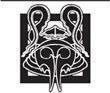

Seanchan'lar
Geofram Bornhald, yanan evlerin ve sokağın toprak zeminine saçılmış cesetlerin kokusunu duymazdan geldi. Byar ile yanındaki adamların yarısı olan yüz kişilik bir Muhafız takımı, atlarını onun hemen ardından köye sürüyordu. Birliğinin bu kadar dağınık olması hiç hoşuna gitmiyordu, pek çok noktada komuta Sorguculardaydı, ama ona verilen emirler açıktı: Sorguculara itaat et!
Burada çok az dirençle karşılaşmışlardı; yalnızca yarım düzine meskenden duman sütunları yükseliyordu. Hanın hâlâ ayakta olduğunu gördü, neredeyse Almoth Ovası'ndaki tüm binalar gibi kireç boyalıydı.
Hanın önünde atının dizginlerini çekti; gözleri, askerlerinin köy kuyusunun yanında tuttuğu esirlerden köyün yeşilliğini kirleten uzun darağacına gitti. Darağacı aceleyle dikilmişti, iki direğin üzerindeki uzun bir sırıktan ibaretti, ama üzerinden giysileri meltemle dalgalanan otuz ceset sarkıyordu. Byar bile buna hayretle baktı.
"Muadh!" diye kükredi. Kır saçlı bir adam esirleri tutanların yanından uzaklaştı. Muadh bir keresinde Karanlıkdostlarının eline düşmüştü; yaralı yüzü en güçlü kişilerin bile irkilmesine neden olurdu. "Bu senin işin mi, Muadh, yoksa Seanchan'ın mı?"
"İkisi de değil, Lord Kumandanım." Muadh'ın sesi, boğuk, fısıltılı bir hırlamaydı, Karanlıkdostlarından bir yadigâr daha. Başka bir şey söylemedi.
Bornhald kaşlarını çattı. "Oradakiler yapmış olamaz, kesinlikle," dedi esirleri işaret ederek. Cairhienliler onları Tarabon üzerinden buraya getirirken olduğu kadar derli toplu görünmüyorlardı, fakat dikkatli bakışlarının altında iki büklüm olan ayak takımıyla kıyaslandığında geçit resmi yapmaya hazır gibi görünüyorlardı. Paçavralar ve zırh parçaları içindeki, asık yüzlü adamlar. Tarabon'un Tümentepe'deki istilacıların üzerine gönderdiği ordudan geriye kalanlar.
Muadh tereddüt etti, sonra dikkatle, "Köylülerin dediğine göre üzerlerinde Tarabon pelerinleri varmış, Lord Kumandan. Aralarında gri gözleri ve uzun bir bıyığı olan, ihyan bir adam varmış, bu adam Evlat Eanvin'in ikizi gibi geliyor ve güzel yüzünü sarı bir sakalın arkasına gizlemeye çalışan, sol eliyle dövüşen bir delikanlı da varmış. Neredeyse Evlat Wuan'ı akla getiriyor, Lord Kumandanım."
"Sorgucular!" diye tükürdü Bornhald. Eanvin ile Wuan Sorgucuların komutasına aktarmak zorunda kaldıklarının arasındaydı. Daha önce de Sorgucuların taktiklerini görmüştü, ama çocukların bedenleriyle karşılaşması ilk kez oluyordu.
"Lord Kumandanım öyle diyorsa, öyledir." Muadh bunu şiddetle tasdik ediyormuş gibi söylemişti.
"Onları kesip indirin," dedi Bornhald bitkinlikle. "Onları indirin ve köylülere başka kimsenin öldürülmeyeceğini söyleyin." Aptalın biri kadın onu izliyor diye cesaret gösterisi yapmazsa, ben de örnek olsun diye onu öldürmek zorunda kalmazsam tabiî. Muadh bağırarak merdiven ve bıçak getirilmesini isterken Bornhald yine esirleri süzerek atından indi. Düşünmesi gereken, Sorgucuların aşırı şevkli oluşundan başka şeyler de vardı; Sorgucuları düşünmeyi hepten kesebilmeyi diliyordu.
"Pek direnç göstermiyorlar, Lord Kumandanım," dedi Byar, "ne bu Tarabonlular ne de Domanilerden artakalanlar. Köşeye sıkışmış sıçanlar gibi atılıyorlar, ama karşılarına bir şey çıktığı zaman da hemen kaçıyorlar."
"Bu adamlara tepeden bakmadan önce, bakalım istilacılara karşı ne yapacağız, olur mu?" Esirlerin yüzünde, adamları oraya gelmeden önce de var olan, yenik bir bakış vardı. "Muadh benim için içlerinden birini seçsin." Sırf Muadh'ın yüzü bile pek çok adamın kararlılığını çözmeye yeterdi. "Tercihen bir subay olsun. Gördüklerini süslemeden anlatacak kadar akıllı, ama karakteri bütünüyle gelişmemiş olacak kadar genç olsun. Muadh'a bu konuda pek de yumuşak davranmamasını söyle, olur mu? Adam beni aksi yönde ikna etmediği sürece, ona aklına hayaline sığmayacak kadar kötü şeyler yapmaya niyetlendiğime inansın." Dizginlerini Cairhienlilerden birine fırlatarak hana girdi.
Şaşırtıcı bir biçimde hancı da oradaydı ve pis gömleği göbeğinin üzerinde, nakışlı kırmızı kırık dalları patlayacakmış gibi gerilen, yaltakçı, terli bir adamdı. Bornhald, elinin bir hareketiyle adamı uzaklaştırdı; bir kadınla çocukların hancı tarafından dışarı çıkarılana kadar bir kapı sahanlığında toplaştığını belli belirsiz fark etti.
Bornhald zırh eldivenlerini çıkarıp masalardan birine oturdu. Yabana istilacılar hakkında çok az şey biliyordu. Şahinkanadı Artur hakkında zırvalayanlar dışında herkes, onlara böyle diyordu. İstilacıların kendilerine Seanchanlar ve Hailene dediklerini biliyordu. Bu ikincinin anlamını çıkartacak kadar Eski Lisan biliyordu. Önce Gelenler veya Önceller. Kendilerine aynı zamanda Yuvaya Dönenler anlamına gelen Rhyagelle de diyorlar ve Corerine'den, yani Dönüş'ten bahsediyorlardı. Bunlar neredeyse Şahinkanadı Artur'un ordularının geri döndüğüne inanmasına yetecekti. Kimse Seanchanların nereden geldiğini bilmiyordu; tek bilinen, gemilerle geldikleriydi. Bornhald'ın Deniz Halkı'na kendilerine bilgi vermeleri konusundaki ricaları sessizlikle karşılanmıştı. Amadorlar nezdinde Atha'an Miere'nin itibarı yüksek değildi ve tavırları da faiziyle iade ediliyordu. Seanchanlar hakkında tek bildiği, dışarıdakiler gibi adamlardan duyduklarıydı. İrileşmiş gözlerle ve terler dökerek, savaşa atla olduğu kadar canavarların sırtında gelen, yanlarında canavarlarla savaşan ve düşmanlarının ayakları altındaki toprağı altüst etmek için Aes Sedailer getiren adamlardan bahseden, yenik, örselenmiş ayak takımı.
Kapıdan gelen çizme sesleri, yüzüne kurdumsu bir sırıtış takınmasına neden oldu, ama Byar'ın yanındaki Muadh değildi. Yanında duran, kolunda siyah askısıyla miğferini taşıyan adam, Bornhald'ın millerce uzakta olmasını beklediği Jeral'dı. Genç adam zırhının üzerine Çocukların beyaz pelerinini değil, Domani kesimli, mavi biyeli bir cüppe giymişti.
"Muadh şu anda genç bir adamla konuşuyor, Lord Kumandanım," dedi Byar. "Evlat Jeral az önce bir mesaj getirdi."
Bornhald, Jeral'a başlamasını işaret etti.
Genç adam doğrulmadı. "Jaichim Carridin'in saygılarıyla," diye başladı dümdüz ileriye bakarak, "Işığın Eli'ni-"
"Sorgucuların iltifatlarına ihtiyacım yok," diye hırladı Bornhald ve genç adamın yüzündeki şaşkın ifadeyi gördü. Aslına bakılırsa Byar da tedirgin görünüyordu. "Bana mesajını ileteceksin, değil mi? Ben istemedikçe kelimesi kelimesine aktarma. Bana sadece ne istediğini söyle."
Ezberden okumaya hazırlanmış çocuk, başlamadan önce yutkundu. "Lord Kumandanım, o adamı Tümentepe'nin fazlasıyla yakınına götürdüğünüzü söylüyor. Altmoth Ovası'ndaki Karanlıkdostlarının saklandıkları yerden çıkarılıp yok edilmeleri gerektiğini ve sizin -beni affedin, Lord Kumandanım- hemen geri dönüp ovanın merkezine doğru yola çıkacağınızı söylüyor." Gergin bir şekilde durarak bekledi.
Bornhald onu süzdü. Ovanın tozu toprağı, Jeral'ın yüzünün yanı sıra, peleriniyle çizmelerine de yapışmıştı. Bornhald, "Git de kendine yiyecek bir şeyler bul," dedi ona. "İstersen, bu evlerden birinde yıkanacak su bulursun. Bir saat sonra bana dön. İletmen için mesajlarım var." Elini sallayarak genç adamı dışarı gönderdi.
"Sorgucular haklı olabilir, Lord Kumandanım," dedi Byar Jeral gittiğinde. "Ovaya yayılmış pek çok köy var ve Karanlıkdostları-"
Bornhald'ın masaya vurduğu eli onu susturdu. "Hangi Karanlıkdostları? Ele geçirilmesini emrettiği köylerin hiçbirinde geçim vasıtalarını yakacağımızdan endişelenen çiftçiler ve esnaflarla hastalara bakan birkaç yaşlı kadın dışında kimseyi görmedik." Byar'ın yüzü bir ifadesizlik sanatı örneğiydi; Karanlıkdostları görmeye her zaman Bornhald'dan daha hazırdı. "Ya çocuklar, Byar? Burada çocuklar da mı Karanlıkdostu oluyor?"
"Annenin günahlarının hesabı beşinci kuşağa kadar sorulur," diye alıntı yaptı Byar. "Babanın günahları ise onuncu kuşağa kadar gider." Ama huzursuz görünüyordu. Byar bile daha önce hiç çocuk öldürmemişti.
"Acaba, Byar, Carradin'in sancaklarımızı ve Sorgucuların başını çektiği adamların cüppelerini alma nedenini merak ettin mi? Bizzat Sorgucular bile beyaz giysilerini bıraktı. Bu akla bir şey getiriyor, değil mi?"
"Mutlaka bir nedenleri vardır, Lord Kumandanım," dedi Byar yavaşça. "Sorgucuların her zaman nedenleri vardır, geri kalan bizlere söylemeseler bile."
Bornhald kendi kendine, Byar'ın iyi bir asker olduğunu hatırlattı. "Kuzeydeki çocuklar Tarabonlu cüppeleri giyiyor, Byar, güneydekiler de Domani. Bunun bana düşündürdüklerinden hoşlanmıyorum. Burada Karanlıkdostları var, ama Falme'deler, ovada değil. Jeral yola çıktığında, tek başına gitmeyecek. Bulabildiğim her Cairhien grubuna mesajlar gidecek. Niyetim birliği Tümentepe'ye götürmek ve asıl Karanlıkdostlarının, bu Seanchanlıların neler çevirdiğini öğrenmek niyetindeyim."
Byar sıkıntılı görünüyordu, ama o daha bir şey söyleyemeden, Muadh yanında esirlerden biriyle çıkageldi. Yıpranmış, süslü bir göğüslük içinde, terleyen genç adam, Muadh'in çirkin suratına korku dolu bakışlar atıyordu.
Bornhald hançerini çıkarıp tırnaklarını düzeltmeye başladı. Bunun, bazı adamların sinirini neden bozduğunu hiç anlamamıştı, ama yine de kullanıyordu. Babacan gülümsemesi bile esirin kirli yüzünün solmasına neden oluyordu. "Şimdi, genç adam, bana bu yabancılar hakkında bildiğin her şeyi anlatacaksın, olur mu? Söyleyeceğin şeyleri düşünmek istersen, düşünebilmen için seni Evlat Muadh'la birlikte geri gönderirim."
Esir irileşmiş gözleriyle Muadh'a bir bakış attı. Sonra sözcükler ağzından dökülmeye başladı.
Aryth Okyanusu'nun uzun ölü denizleri Serpinti'nin yalpa vurmasına neden oluyordu, fakat Domon'un açık bacakları dürbünün uzun tüpünü gözüne tutar ve onları kovalayan büyük gemiyi izlerken onu dengede tutuyordu. Gemi onları kovalıyor ve arayı yavaşça kapatıyordu. Serpinti'nin önünde gittiği rüzgâr ne en iyi, ne de en güçlü rüzgârdı, ama diğer gemi, dik pruvasıyla yardığı ölü denizleri köpükleri dağlara çevirirken, daha iyi esemezdi. Tümentepe'nin karanlık yarlar ve dar kumsallardan oluşan sahil şeridi doğuda yükseliyordu Serpinti'yi fazla açığa çıkarmak istememişti ve şimdi de bunun bedelini ödeyeceğinden şüpheleniyordu.
"Yabancılar, Kaptan?" Yarin'in sesi sanki ter kokuyordu. "Bu yabancılardan birinin gemisi mi?"
Domon dürbünü indirdi, ama gözü hâlâ tuhaf kaburgalı yelkenleriyle o dikdörtgen görünümlü gemiyle doluydu sanki. "Seanchan," dedi ve Yarin'in inlediğini duydu. Kalın parmaklarıyla küpeştede davul çaldı, sonra serdümene, "Gemiyi kıyıya yanaştır. Bu gemi, Serpinti'nin yol alabileceği sığ sulara girmeye cesaret edemez." dedi.
Yarin bağırarak emirlerini verdi ve serdümen yekeyi çevirip pruvayı sahil şeridine doğru döndürürken, mürettebat serenleri halatla çekmeye başladı. Serpinti yönünü rüzgâra çevirdiğinden daha yavaş hareket ediyordu, fakat Domon diğer gemi yanına varmadan önce kumsala yanaşabileceğinden emindi. Ambarları dolu olsaydı, o koca teknenin asla giremeyeceği kadar sığ sulara girebilirdi.
Gemisi suda, Tanchico'dan gelirken olduğundan daha yüksekte gidiyordu. Orada aldığı havaifişek yükünün üçte biri gitmiş, Tümentepe'deki balıkçı köylerinde satılmıştı, ama havaifişeklerden akan gümüşlerle birlikte rahatsız edici haberler de gelmişti. Halk; istilacıların uzun, kutu gibi gemilerinin ziyaretlerinden bahsediyordu. Seanchan gemileri sahilin açıklarında demir attığında, evlerini korumak için hazırlanan köylülerin üzerine göklerden yıldırımlar yağmış ve ufak sandallar istilacıları kıyıya çıkarırken toprak ayaklarının altında patlayarak ateş küsmüştü. Domon kararmış toprağı görene kadar duyduklarının zırvalıktan ibaret olduğunu düşünmüştü ve bunu artık o kadar çok köyde görmüştü ki, şüphe duymasına olanak yoktu. Seanchan askerlerinin yanında canavarlar savaşıyordu, gerçi köylülerin dediğine göre pek direnen kalmamıştı ve bazıları, Seanchanların kendilerinin de kafaları dev böcekleri andıran birer canavar olduğunu bile iddia ediyordu.
Tanchico'da kendilerine ne ad verdiklerini bilen kimse yoktu ve Tarabonlular, kendi askerlerinin istilacıları denize döktüğünden gururla bahsediyordu. Ama sahil kasabalarının hepsinde iş başkaydı. Seanchanlar hayret içindeki halka, bozdukları yeminleri yeniden etmeleri gerektiğini söylüyor, ancak ne yeminlerin ne zaman bozulduğunu, ne de ne anlama geldiklerini anlatmaya tenezzül etmiyorlardı. Genç kadınlar teker teker muayeneye götürülüyor ve bazıları gemilere taşınıp bir daha kimse tarafından görülmüyordu. Yaşça büyük olan birkaç kadın, Rehberler ile Şifacıların bazıları da ortadan kaybolmuştu. Seanchanlar, yeni belediye başkanları ve yeni Kurullar seçmişti ve kadınların ortadan kayboluşuna ve seçimlerde hiç söz sahibi olmayışlarına itiraz edenler asılıyor, aniden alevler içinde kalıyor ya da acı acı havlayan köpekler gibi bir kenara itiliyorlardı. İş işten geçene kadar hangisinin olacağını anlamanın yolu yoktu.
İnsanlar tamamıyla sindirildiğinde, sersemlemiş bir halde diz çöküp Öncellere itaat etmeye, Dönüş'ü beklemeye ve Yuvaya Dönenler'e hayatları pahasına hizmet etmeye yemin ettiğinde, Seanchanlar gemileriyle denize açılıyor ve genellikle hiç dönmüyordu. Ellerinde tuttukları tek kasabanın Falme olduğu söyleniyordu.
Bıraktıkları köylerin bazılarında, erkekler ve kadınlar yavaş yavaş eski yaşamlarına dönüyor, hatta Kurullarını tekrar seçmekten bahsetmeye başlıyordu, ama çoğunluk denize huzursuz bakışlar atarak, soluk yüzlerle itiraz ederek, etmeye zorlandıkları yeminlere, anlamasalar bile, sadık kalmaya niyetli olduklarını söylüyorlardı.
Domon, mümkünse hiçbir Seanchanla karşılaşmamaya niyetliydi.
Yaklaşan Seanchan güvertelerini ne kadar seçebileceğini görmek için dürbünü kaldırıyordu ki, iskele tarafında en çok yüz adım ötede deniz yüzeyinde sular ve ateşler püskürdü. O daha ağzını bile açamadan diğer bir alev sütunu diğer tarafta denizi böldü ve daha o buna bakmak için dönerken yeni bir tanesi önde püskürdü. Püskürtüler doğdukları kadar hızla sönerken serpintileri güverteye savruldu. Daha önce oldukları yerde deniz kaynıyormuş gibi fokurduyor ve buhar çıkarıyordu.
"Biz... onlar arayı kapatamadan sığ sulara ulaşmış oluruz," dedi Yarin ağır ağır. Sis bulutlarının altında bulanan sulara bakmamaya çalışıyor gibiydi.
Domon başını iki yana salladı. "Her ne yaptılarsa, gemiyi kıyıya çeksem bile bizi paramparça edebilirler. Su püskürtülerinin içindeki alevleri ve havaifişeklerle dolu ambarları düşünerek ürperdi. "Talih beni dürtsün, boğulacak kadar yaşamayabiliriz." Emri vermeye gönülsüzce sakalını çekiştirip bıyıksız üst dudağını ovaladı -gemiyle içindekiler dünyada sahip olduğu tek şeydi- ama nihayet kendisini zorlayarak konuştu. "Onu rüzgâra getir, Yarin ve yelkenleri indir. Çabuk ol, be adam, çabuk! Onlar hâlâ kaçmaya çalıştığımızı sanmadan önce."
Mürettebat üçgen yelkenleri indirmeye koşarken Domon da yaklaşan Seanchan gemisini seyretmek için döndü. Serpinti yavaşladı ve ölü denizlere başvurdu. Diğer gemi suda Domon'un gemisinden daha yüksekti, pruvasında ve kıç tarafında tahta kuleler vardı. Küpeştede adamlar bu tuhaf yelkenleri kaldırıyor ve kulelerin üzerinde zırhlı şekiller duruyordu. Yan taraftan bir sandal denize indirildi ve on kürekle Serpinti'ye yaklaşmaya başladı. Üzerinde zırhlı şekiller ve -Domon hayretle kaşlarını çattı- kıç tarafa çömelmiş iki kadın vardı. Sandal Serpinti'nin gövdesine tosladı.
Güverteye ilk çıkan zırhlı adamlardan biriydi ve Domon, bazı köylülerin Seanchanların da canavar olduğunu iddia etmelerinin nedenini hemen anladı. Miğfer fazlasıyla dev bir böcek kafasına benziyordu, antenleri andıran ince, kırmızı sorguçları vardı; miğferi giyen adam üstçenenin içinden bakıyor gibiydi. Miğfer etkiyi güçlendirmek için boyanıp altın varakla kaplanmıştı, adamın zırhının geri kalan bölümleri de boyayla ve altınla işlenmişti. Altın hatlı siyah ve kırmızı renklerde, uçları birbirini örten plakalar göğsünü kaplıyor ve kollarının dış tarafıyla baldırlarının ön taraflarını kaplıyordu. Zırh eldivenlerinin çelik sırtları bile kırmızıyla altın renklerindeydi. Metalle örtülü olmadığı yerlerde, giysileri koyu renkli deridendi. Sırtındaki kıvrık, iki elle tutulan kılıcının kını ve kabzası, siyah ve kırmızı meşindendi.
Derken zırhlı şekil miğferini çıkardı ve Domon ona bakakaldı. Adam sandığı bir kadındı. Koyu renkli saçları kısa kesilmişti ve yüzü sertti, ama kadın olduğuna şüphe yoktu. Domon, Aielsoylular dışında böyle bir şeyi hiç duymamıştı ve Aiellerin deli olduğunu da herkes bilirdi. Kadının yüzünün, Domon'un bir Seanchandan beklediği kadar farklı olmaması da aynı derecede şaşırtıcıydı. Gözleri maviydi, doğru, teni de son derece açıktı, ama Domon ikisini de daha önce görmüştü. Bu kadının üzerinde elbise olsaydı, kimse dönüp ona ikinci kez bakmazdı. Domon kadına baktı ve kanaatini değiştirdi, bu soğuk bakışlarla sert yanaklar, kadının her yerde dikkat çekmesine neden olurdu.
Diğer askerler de kadının peşinden güverteye çıktılar. Domon, bazıları tuhaf miğferlerini çıkardıklarında en azından onların erkek olduğunu görerek rahatladı; siyah veya kahverengi gözleri olan, Tanchico veya Illian'da dikkat çekmeyecek adamlar. Gözünde kılıç taşıyan mavi gözlü kadınlarla dolu ordular canlanmaya başlamıştı. Kılıçlı Aes Sedailer, diye düşündü ve denizin patlayışını hatırladı.
Seanchan kadını, gemiyi kibirle süzdükten sonra Domon'un kaptan olduğuna karar verdi -giysilerine bakıldığında ya Domon ya da Yarin olmalıydı; Yarin'in gözlerini kapatmış bıyık altından dualar mırıldanıyor oluşu Domon'un kaptan olduğunu işaret ediyordu- ve ona mızrak gibi bir bakış yöneltti.
"Mürettebatın veya yolcuların arasında hiç kadın var mı?" Kadın, sözlerini anlamayı zorlaştıran biraz kötü bir telaffuzla konuşuyordu, fakat sesinde, yanıt almaya alışkın olduğunu gösteren bir buyurganlık vardı. "Sen kaptansan cevap ver, adam. Değilsen, diğer budalayı uyandır ve konuşmasını söyle."
"Kaptan ben oluyorum, Leydim," dedi Domon dikkatle. Kadına nasıl hitap etmesi gerektiği hakkında en ufak bir fikri yoktu ve pot kırmak istemiyordu. "Hiç yolcum yok ve mürettebatımda da kadın bulunmuyor." Uzaklara götürülen kızlarla kadınları düşündü ve ilk kez bu insanların onlardan ne istediğini merak etti.
Kadın giysili iki kadın sandaldan yaklaşıyor, biri güverteye çıkarken diğerini -Domon gözlerini kırptı- gümüşi metalden bir yularla çekiyordu. Yular ilk kadının elindeki bir bilezikten ikincinin boynundaki bir halkaya uzanıyordu. Yuların dokuma mı yoksa birbirine eklenen parçalardan yapılmış mı olduğunu anlamamıştı -her nasılsa ikisi birdenmiş gibi görünüyordu- ama hem bilezik, hem de halkayla tek parça olduğu kesindi. İkinci kadın güverteye çıkarken, ilk kadın yuları kangal halinde sardı. Boynunda halka olan kadının üzerinde, düz, koyu griden giysiler vardı ve ellerini kavuşturmuş, gözlerini ayaklarının altındaki tahtalardan ayırmadan duruyordu. Diğerinin mavi giysisinin göğsünde ve çizmelerinin bileğine kadar gelen eteğinin yan tarafında çatallı, gümüş yıldırımlar işlenmiş kırmızı panolar vardı. Domon, kadınlara tedirginlikle baktı.
"Yavaş konuş, adam," dedi mavi gözlü kadın bozuk telaffuzuyla. Güverteden yürüyüp Domon'un karşısına dikilerek kafasını kaldırıp adama her nasılsa ondan daha uzun boylu ve iri görünmeyi başararak baktı. "Konuşmanı anlamak, bu Işık uğramaz memleketteki diğerlerinden bile zor. Ben de Kan'dan olduğumu iddia etmiyorum. Henüz değil. Corenne'den sonra... ben Kaptan Egeanin."
Domon, yavaş konuşmaya çalışarak söylediğini tekrarladı ve, "Ben barışçıl bir tacirim, Kaptan. Size zarar vermek niyetinde değilim ve savaşınızla hiçbir ilgim yok," diye ekledi. Yularla birbirine bağlı kadınlara bir bakış daha atmaktan kendini alamadı.
"Barışçıl bir tacir ha?" Egeanin bunu düşündü. "Bu durumda, sadakat yeminini yeniler yenilemez, gitmekte özgür olacaksın." Domon'un attığı bakışları fark etti ve mülkiyet gururuyla dönüp kadınlara gülümsedi. "Damanemi beğendin mi? Bana çok pahalıya mal oldu, ama her kuruşuna değerdi. Çok az soylunun bir damanesi vardır ve damane'lerin çoğu tahtın malıdır. O güçlüdür, tacir. İstesem gemini kıymıklara ayırabilirdi."
Domon, kadınlara ve gümüş yulara baktı. Yıldırım işaretlerini taşıyan kadının denizdeki alevli püskürtülerle ilişkilendirmiş ve Aes Sedai olduğunu varsaymıştı. Egeanin az önce kafasını allak bullak etmişti. Bunu bir Aes Sedai'ye kimse... "O Aes Sedai mi?" dedi kulaklarına inanamayarak.
Kadının yüzüne elinin tersiyle gelişigüzel attığı tokadı hiç görmedi. Çelik sırtlı zırh eldiveni dudağını yararken tökezleyerek geriledi.
"Bu ad asla zikredilmez," dedi Egeanin, sesinde tehlikeli bir yumuşaklıkla. "Yalnızca damane'ler, yani Yularlılar vardır ve artık sadece ismen değil, gerçek anlamda da hizmet ediyorlar." Gözlerinin yanında buzlar bile sıcak kalıyordu.
Domon kan yuttu ve ellerini yan tarafında sıkı sıkı tuttu. Elinin altında bir kılıç olsaydı, mürettebatını bir düzine zırhlı askere karşı kıyıma göndermezdi, ama sesini mütevazı çıkarmak için çaba sarfetmek zorunda kaldı. "Saygısızlık etmek istemedim, Kaptan. Siz ve âdetleriniz hakkında hiçbir şey bilmiyorum. Sizi gücendirdiysem, bu kasten değil, bilgisizliktendir."
Kadın ona bakarak şöyle dedi: "Hepiniz bilgisizsiniz Kaptan, ama atalarınızın borcunu ödeyeceksiniz. Bu topraklar bizimdi ve tekrar bizim olacak. Dönüşle birlikte tekrar bizim olacak." Domon ne söyleyeceğini bilmiyordu -Şahinkanadı Artur hakkındaki bu zırvalar doğru olamaz değil mi?- bu yüzden ağzını kapalı tuttu. "Gemini Falme'ye götüreceksin," -Domon itiraz etmeye başladı, ama kadının öfkeli bakışlarını görünce suspus oldu- "orada sen ve gemin inceleneceksiniz. İddia ettiğin gibi barışçıl bir tacirden öte bir şey değilsen, yeminleri ettikten sonra yoluna gitmene izin verilecek."
"Yeminler mi, Kaptan? Hangi yeminler?"
"İtaat etme, bekleme ve hizmet etme yemini. Atalarınızın hatırlaması gerekirdi."
Yanındakileri toparladı -rütbesinin düşüklüğü, Kaptan Egeanin'in karşısında yerlere kadar eğilmesi kadar zırhının sadeliğinden de anlaşılan tek bir adam dışında- ve sandalları daha büyük olan gemiye doğru ilerledi. Geride kalan Seanchan, herhangi bir emir vermedi, onun yerine güverteye bağdaş kurup oturdu ve mürettebat yelkenleri açıp yola koyulurken kılıcını bilemeye başladı. Tek başına olmaktan korkusu yok gibiydi ve Domon ona el kaldıracak herhangi bir mürettebat üyesini şahsen denize atardı, zira Serpinti sahilde yol alırken, Seanchan gemisi de daha derin sularda onu izliyordu. İki gemi arasında bir mil vardı, ama Domon kaçış umudu olmadığını biliyor ve adamı Kaptan Egeanin'e, ana kucağında yolculuk etmiş gibi salim bir şekilde teslim etmek istiyordu.
Falme'ye giden yol uzundu ve Domon nihayet Seanchan'ı biraz olsun konuşmaya ikna etti. Orta yaşlı, kara gözlü bir adamdı, gözlerinin üzerinde eski bir yara izi, çenesini çenten başka bir yara izi vardı. Adı Caban'dı ve Aryth Okyanusu'nun bu yanındaki herkese karşı tek beslediği duygu nefretti. Domon bunu duyunca bir an tereddüt etti. Belki de onlar gerçekten... Yo, bu delilik. Caban'ın telaffuzu da Egeanin'inki gibi bozuktu, fakat kadının telaffuzu demirin üzerinden geçen ipeği andırırken, adamınki kayayı törpüleyen bir deriyi andırıyordu ve genellikle savaşlardan, içkiden ve tanıdığı kadınlardan bahsetmek istiyordu. Domon ikide bir adamın bu yer ve zamandan mı, yoksa geldiği yerden mi bahsettiğini karıştırıyordu. Adam kesinlikle, Domon'un bilmek istediği herhangi bir konuda konuşmak istemiyordu.
Domon, bir keresinde damane'leri sordu. Çaban serdümenin önüne oturduğu yerden yukarı uzandı ve kılıcının ucunu Domon'un gırtlağına dayadı. "Dilinin değdiği şeye dikkat et, yoksa dilinden olursun. Bu Kan'ı ilgilendirir, senin gibileri değil. Benim gibileri de değil." Bunu söylerken sırıtıyordu ve sözlerini bitirir bitirmez ağır, kavisli kılıcının üzerinde bir taş kaydırma işine geri döndü.
Domon yakasının üzerinde kabaran kan noktasına dokundu ve en azından bunu bir daha asla sormamaya karar verdi.
İki gemi Falme'ye yaklaştıkça, yanlarından geçtikleri kare görünümlü, bazılarının yelkenleri açık, ama çoğu demirli olan Seanchan gemilerinin sayısı da arttı. Hepsi de düz pruvalı ve kuleliydi. Domon'un, Deniz Halkı'nda bile görmediği kadar büyük gemilerdi. Yeşil ölü denizlerin üzerinden, keskin pruvaları ve eğik yelkenleriyle birkaç yerli geminin hızla uzaklaştığını gördü. Bu görüntü ona, Egeanin'in gitmesine izin verileceği konusunda gerçeği söylediğine dair güven telkin etti.
Serpinti Falme'nin bulunduğu burna vardığında, limana demir atmış Seanchan gemilerini gören Domon'un ağzı açık kaldı. Gemileri saymaya çalıştı, ama yüzden sonra henüz yarıya gelmesine rağmen, saymayı bıraktı. Bu kadar çok gemiyi daha önce tek bir yerde görmüştü -Illian'da, Tear'da ve hatta Tanchico'da- ama o gemilerin arasında çok sayıda daha küçük tekne de vardı. Kasvetle kendi kendine mırıldanarak, büyük Seanchan bekçi köpeğinin güdümünde, Serpinti'yi limana soktu.
Falme, Tümentepe'nin hemen ucundaki bir dilin üzerinde bulunuyordu, batısında Aryth Okyanusu'ndan başka bir şey yoktu. Her iki tarafta yüksek yarlar liman ağzına kadar uzanıyordu ve bunlardan birinin üzerinde, limana giren her geminin altından geçmesi gereken Dalgaları Gözleyenler'in kuleleri duruyordu. Kulelerden birinin yan tarafında asılı duran bir kafesin içinde, bir adam umutsuzca oturuyor, bacakları çubuklardan aşağı sarkıyordu.
"Bu kim?" diye sordu Domon.
Seanchan nihayet kılıcını bilemeyi bıraktı; oysa Domon, adamın onunla tıraş olmaya niyetlenip niyetlenmediğini merak etmeye başlamıştı. Seanchan başını kaldırıp Domon'un işaret ettiği yere baktı. "Ah. Bu ilk Gözleyen. İlk geldiğimizde koltukta oturan değil, elbette. Adam öldüğünde yeni bir tane seçiyorlar ve onu kafese koyuyoruz."
"Ama neden?" diye sordu Domon.
Caban'ın sırıtışı çok fazla dişi gözler önüne seriyordu. "Yanlış şeyi gözlediler ve hatırlamaları gerekenleri unuttular."
Domon, gözlerini Seanchan'dan aldı. Serpinti son gerçek ölü denizden kayarak limanın sakin sularına girdi. Ben bir tacirim ve bunlar benim üzerime vazife değil…
Falme, limanı oluşturan oyuğun yamaçlarındaki taş rıhtımlardan yükseliyordu. Domon kara taştan evlerin hatırı sayılır büyüklükte bir kasaba mı, ufak bir şehir mi oluşturduğuna karar veremiyordu. Kesinlikle orada Illian'daki en ufak saraya bile rakip olabilecek bir bina göremiyordu.
Serpinti'yi rıhtımlardan birindeki bir boşluğa yönlendirdi ve mürettebat gemiyi sıkıca bağlarken, Seanchanların ambarındaki havaifişeklerden bir bölümünü alıp almayacağını merak etti. Benim üzerime vazife değil.
Bizzat Egeanin'in de damanesiyle birlikte rıhtıma geldiğini görerek şaşırdı. Bu defa bilekliği takan, giysisinde kırmızı panolarla çatallı yıldırımlar olan başka bir kadındı, ama damane, yanındaki onunla konuşmadıkça asla başını kaldırmayan, aynı üzgün suratlı kadındı. Egeanin, Domon ile mürettebatını bir çift askerinin gözetiminde rıhtıma oturttu -daha fazla askerin gerekli olduğunu düşünmüyor gibiydi ve Domon da onunla tartışacak değildi- bu sırada diğerleri de Serpinti'yi onun gözetiminde aradılar. Damane de aramaya katıldı.
Rıhtımda bir şey belirdi. Domon ona başka bir ad veremiyordu. Buruşuk, gri-yeşil postu ve kama biçimindeki kafasında ağız yerine gagası olan azman gibi bir yaratıktı. Üç de gözü vardı. Zırhına boyayla, aynı yaratığın gözlerine benzeyen üç göz yapılmış bir adamın yanında hantal hantal yürüyordu. İkili geçerken yerli halk, kaba işlemeli gömleklerle dizlerine kadar inen uzun yelekler giymiş rıhtım işçileri ve gemiciler ürkerek yana çekiliyordu, ama hiçbir Seanchan onlara ikinci kez dönüp bakmıyordu. Canavarlı adam, yaratığı el işaretleriyle idare ediyor gibiydi.
Adam ile yaratık binaların arasına saparak Domon'u arkalarından bakar, mürettebatını ise kendi aralarında fısıldaşır halde bıraktılar. Üzerime vazife değil, diye kendi kendisine hatırlattı Domon. Onun üzerine vazife olan şey gemisiydi.
Havada, tanıdık bir tuzlu su ve zift kokusu vardı. Güneş yüzünden sıcakladığından taşın üzerinde huzursuzca kımıldandı ve Seanchanlıların ne aradığını merak etti. Damanenin ne aradığını. O şeyin ne olduğunu. Martılar haykırarak limanın üzerinde pike yapıyordu. Kafese kapatılmış bir adamın çıkarabileceği sesleri düşündü. Üzerime vazife değil.
Egeanin nihayet diğerlerini rıhtıma çıkardı. Domon ihtiyatla Seanchan kaptanın elinde sarı ipeğe sarılı bir şey olduğunu fark etti. Tek elle taşınabilecek kadar ufak bir şeydi, fakat kadın dikkatle iki elinde tutuyordu.
Ayağa kalktı -askerler yüzünden bunu yavaşça yaptı, gerçi hepsinin yüzünde, Caban'la aynı horgörü okunuyordu. "Görüyorsunuz ya, Kaptan? Ben barışçıl bir tacirim. Belki de halkınız havaifişek satın almak ister?"
"Belki de, tacir." Kadında Domon'u huzursuz eden bastırılmış bir heyecan havası vardı ve kadının az sonra söyledikleri de bu duyguyu artırdı. "Benimle geleceksin."
İki askere de onlarla gelmelerini söyledi ve askerlerden biri hareket etmesi için Domon'u itti. Sertçe değil; Domon çiftçilerin hareket etsinler diye sığırları böyle ittiğini görmüştü. Dişlerini sıkarak Egeanin'i takip etti.
Parke taşlı sokak yamacı tırmanarak limanın kokularını arkada bırakıyordu. Sokak yukarı çıkarken taş ve tahta çatılı evler büyüyor ve uzuyordu. İstilacıların elindeki bir kasaba için hayret verici bir biçimde, sokaklarda Seanchan askerinden çok yerli halktan insanlar vardı ve yanlarından ara sıra, göğüsleri çıplak adamlar tarafından taşınan perdeli bir tahtırevan geçiyordu. Falmeliler, Seanchanlılar orada değilmiş gibi işlerine güçlerine bakıyor gibiydi. Ya da hemen hemen orada değillermiş gibi. Bir tahtırevan veya asker geçtiğinde hem giysilerine bir iki kıvrık çizgi işlenmiş fakir halk, hem de elbiseleri omzundan beline kadar girift nakışlarla işli daha zenginler eğiliyor ve Seanchan geçene kadar da öyle kalıyordu. Domon ile muhafızı için de aynısını yaptılar. Egeanin ile askerleri onlara bakmadı bile.
Domon ani bir şaşkınlıkla yanlarından geçtikleri civar insanlarından bazılarının kemerinde hançer, bazılarının da kılıç taşıdığını fark etti. O kadar şaşırmıştı ki, düşünmeden konuştu. "Bazıları sizin tarafta mı?"
Egeanin, omzunun üzerinden geriye bakarak yüzünde bariz bir şaşkınlıkla ona kaşlarını çattı. Yavaşlamadan halka baktı ve kendi kendisine kafa salladı. "Kılıçları kastediyorsun. Onlar artık bizim halkımız, tacir; yeminlerini ettiler." Aniden durarak bol nakışlı bir cepken yelek giymiş ve sade bir kılıç kayışının ucunda bir kılıç takmış, uzun boylu, geniş omuzlu bir adama işaret etti. "Sen!"
Adam, adımının ortasında, bir ayağı havada kalakaldı ve yüzünde aniden korkulu bir bakış belirdi. Sert bir yüzü vardı, fakat kaçmak istermiş gibi görünüyordu. Bunun yerine kadına doğru döndü ve ellerini dizlerine koyup gözlerini çizmelerine dikerek eğildi. "Bu kişi kaptana nasıl hizmet edebilir?" dedi gergin bir sesle.
"Sen tacir misin?" dedi Egeanin. "Yeminleri ettin mi?"
"Evet, Kaptan. Evet." Gözlerini kadının ayaklarından ayırmadı.
"Arabalarını ülkenin iç kısımlarına götürdüğünde insanlara ne diyorsun?"
"Öncellere itaat etmeleri, Dönüş'ü beklemeleri ve Yuvaya Dönenler'e hizmet etmeleri gerektiğini, Kaptan."
"Ve o kılıcı bize karşı kullanmayı asla düşünmüyor musun?"
Adamın dizlerini kavrayan ellerinin boğumları beyazladı ve birden acılı bir sesle konuşmaya başladı. "Ben yeminleri ettim, Kaptan. İtaat ediyor, bekliyor ve hizmet ediyorum."
"Görüyor musun?" dedi Egeanin Domon'a dönerek. "Silah taşımalarını yasaklamak için hiç neden yok. Ticaret olmalı ve tacirler de kendilerini eşkıyalardan korumalı. İnsanların itaat ettikleri, bekledikleri ve hizmet ettikleri sürece istediği gibi gelip gitmelerine izin veriyoruz. Öncelleri yeminlerinden dönmüştü, ama bunlar bunu yapmamayı öğrendiler." Yine yokuşu tırmanmaya koyuldu ve askerler Domon'u da onun arkasından ittiler.
Domon arkasını dönüp tacire baktı. Adam, Egeanin yolda on adım ilerleyene kadar öylece kaldı, sonra doğrularak yokuştan koşar adım inerek uzaklaştı.
Egeanin ile Muhafızları, bir Seanchan süvari bölüğü yanlarından geçip yokuşu tırmanırken de bakmadılar. Askerler neredeyse at boyundaki kedileri andıran, ancak eyerlerinin altında bronz renkte dalgalanan kertenkele pullarıyla kaplı yaratıkların sırtına binmişti. Toynakları parke taşlarını kavrıyordu. Bölük yanlarından geçerken üç gözlü bir kafa dönüp Domon'a baktı; her şeyin yanında, Domon'un içini huzursuz edecek kadar kurnaz görünüyordu. Sokak boyunca Falmeliler gerileyerek binaların cephelerine yaslanıyor, bazıları gözlerini kapıyordu. Seanchanlılar onlara hiç kulak asmıyordu.
Domon, Seanchanların halkın bu kadar özgür olmasına nasıl izin verebildiklerini anlamıştı. Kendisinin de fazla direnme cesareti gösterip gösteremeyeceğini merak ediyordu. Damane'ler. Canavarlar. Seanchanların ta Dünyanın Omurgası'na kadar yürümesini engelleyebilecek bir şey olup olmadığını merak ediyordu. Üstüme vazife değil, diye kendine kabaca hatırlattı ve gelecekteki ticaret işlerinde Seanchanlardan uzak durmanın bir yolu olup olmadığını merak etti.
Yokuşun bitiminde, kasabanın sona erip tepelerin başladığı yere vardılar. Kasabanın suru yoktu. Ötede ülkenin iç bölgeleriyle iş yapan tacirlere hizmet veren hanlarla araba avluları ve ahırlar vardı. Buradaki evler Illian'daki ikinci dereceden lordlar için saygın birer malikane görevi görebilirdi. En büyüklerinin önünde Seanchan askerlerinden bir şeref kıtası ile üzerinde dalgalanan bir altın, kanatlarını açmış şahin sancağı vardı. Egeanin, Domon'u içeri götürmeden önce kılıcıyla hançerini teslim etti. İki askeri sokakta kaldılar. Domon terlemeye başladı. Bu işte bir lord kokusu alıyordu; bir lordla, lordun kendi bölgesinde iş yapmak asla iyi olmazdı.
Giriş salonunda Egeanin Domon'u kapıya bırakıp bir hizmetkârla konuştu. Gömleğinin bol kollarına ve göğsüne işlenmiş sarmallara bakılırsa, adam civardan biriydi; Domon 'Yüce Lord' sözcüklerini yakaladığını sandı. Hizmetkâr aceleyle uzaklaştı ve neden sonra dönüp onları kesinlikle evdeki en büyük oda olan yere götürdü. Odadaki mobilyaların tümü, halılar bile çıkarılmış ve taş zemin pırıl pırıl parlatılmıştı. Duvarlarla pencereler üzerine tuhaf kuşlar boyanmış paravanlarla gizlenmişti.
Egeanin odanın hemen içinde durdu. Domon nerede olduklarını ve orada hangi nedenle bulunduklarını sormaya çalışınca, Egeanin onu haşin bir bakışla ve sözsüz bir hırlamayla susturdu. Hareket etmemişti, ama ayak parmaklarının üzerinde, zıplamanın eşiğindeymiş gibi görünüyordu. Domon'un gemisinden aldığı şey her neyse, değerliymiş gibi tutuyordu. Domon bunun ne olabileceğini tahmin etmeye çalıştı.
Aniden hafif bir gong sesi duyuldu ve Seanchan kadın, dizlerinin üzerine çökerek ipeğe sarılı şeyi dikkatle yanına koydu. Domon'dan yana bir bakış atınca adam da aynısını yaptı. Lordların âdetleri acayip olurdu ve Seanchan lordlarının da bildiklerinden daha acayip âdetleri olabileceğinden şüpheleniyordu.
Odanın uzak ucundaki kapı aralığında iki adam göründü. Adamlardan birinin kafasının sol tarafı tıraşlıydı, geriye kalan soluk altın renkli saçlarıysa örülmüştü ve kulağının üzerinden omzuna sarkıyordu. Koyu sarı cüppesi, yürürken sarı terliklerinin görünmesine imkân verecek uzunluktaydı. Diğer adamın üzerinde, bir karış arkasında yerlerde sürünecek kadar uzun, mavi brokar ipekten kuş desenli bir cüppe vardı. Kafası tamamen tıraşlıydı ve el tırnakları en az iki buçuk santim uzunluğundaydı, iki elinin baş ve işaret parmağındakiler i de maviye boyanmıştı. Domon'un ağzı açık kaldı.
"Yüce Lord Turak'ın huzurundasın," dedi sarı saçlı adam törensel bir tavırla, "o ki, Önce Geienler'in önderi ve Dönüş'ün imdadına yetişendir."
Egeanin, iki elini yanına alarak yere kapandı. Domon da onu şevkle taklit etti. Tear'ın Büyük Lordları bile bunu istemez, diye düşündü. Gözünün kıyısıyla Egeanin'in yeri öptüğünü gördü. Yüzünü buruşturarak öykünmenin de bir sınırı olduğuna karar verdi. Zaten yapıp yapmadığımı göremezler.
Egeanin aniden ayağa kalktı. Domon da ayaklanacak oldu, ama Egeanin'in gırtlağından yükselen bir homurtu ile örgülü adamın yüzündeki hayret dolu bir bakış tekrar yüzünü yere yapıştırıp bıyık altından mırıldanmasına neden oldu. Bunu, lllian Kralı ile Dokuzlar Konseyi bir araya gelse de yapmam.
"Adın Egeanin mi?" Bu mavi cüppeli adamın sesi olmalıydı. Telaffuzu bozuk konuşmasında neredeyse şarkı gibi bir ritim vardı.
"Kılıç günümde bana verilen isim buydu, Yüce Lordum," diye yanıt verdi Egeanin tevazu ile.
"Bu iyi bir parça, Egeanin. Hayli nadir. Karşılığında bir bedel istiyor musun?"
"Yüce Lord'un memnuniyeti yeterlidir. Ben hizmet etmek için yaşarım, Yüce Lordum."
"İmparatoriçe'ye adını vereceğim, Egeanin. Dönüş'ten sonra, yeni adlar Kan'a çağırılacak. Uygun olduğunu kanıtlarsan, Egeanin adını bırakıp daha yüksek bir isim alabilirsin."
"Yüce Lord beni onurlandırıyor."
"Evet. Yanımdan ayrılabilirsin."
Domon, kadının geri geri giden, ara ara eğilmek üzere duran çizmeleri dışında hiçbir şey göremiyordu. Kapı kadının arkasından kapandı. Uzun bir sessizlik oldu. Turak tekrar konuştuğunda Domon alnından yere damlayan terleri izliyordu.
"Ayağa kalkabilirsin, tacir."
Domon ayağa kalktı ve Turak'ın uzun tırnaklı parmaklarında tuttuğu şeyi gördü. Aes Sedailerin kadim mührünün şekli verilmiş cuendillar diski. Egeanin'in Aes Sedai lafı geçtiğinde nasıl tepki verdiğini hatırlayan Domon iyiden iyiye ter dökmeye başladı. Yüce Lord'un gözlerinde düşmanlık yoktu, sadece hafif bir merak okunuyordu, ama Domon lordlara güvenmezdi.
"Bunun ne olduğunu biliyor musun, tacir?"
"Hayır, Yüce Lordum." Domon'un yanıtı kaya kadar sağlamdı; sakin bir yüz ve sesle yalan söylemeyen hiçbir tacir, uzun süre hayatta kalamazdı.
"Yine de onu gizli bir yerde saklamışsın."
"Ben geçmiş zamanlardan kalan eski şeyleri biriktiririm, Yüce Lordum. El altında olsalar böyle şeyleri çalacak kişiler çoktur."
Turak bir an siyah ve beyaz diske baktı. "Bu cueandillar'dır, tacir -bu ismi biliyor musun?- ve belki de bilmediğin kadar eskidir. Benimle gel."
Domon kendisinden biraz daha emin hissederek adamın peşinden gitti. Bildiği ülkelerdeki lordların herhangi biri, Muhafızları çağıracaksa, bunu çoktan yapmış olurdu. Ama Seanchanlar hakkında tanık olduğu az buçuk şey onların işleri diğer adamlar gibi yürütmediğini gösteriyordu. Yüzünü terbiye ederek sakin durmaya zorladı.
Başka bir odaya götürüldü. Buradaki mobilyaların Turak tarafından getirildiğini düşündü. Tümüyle kavislerden oluşuyor gibiydiler, hiç düz çizgi yoktu ve tahta tuhaf damarları görünene kadar parlatılmıştı. Kuşlar ve çiçek desenleriyle dokunmuş bir ipek halının üzerinde tek bir koltuk ve daire şeklinde yapılmış bir dolap vardı. Paravanlarla yeni duvarlar oluşturulmuştu.
Örgülü adam dolabın kapılarını açarak içinde tuhaf biblolar, fincanlar, kâseler, vazolar ve hiçbirinin boyu ya da şekli bir diğerine benzemeyen elli farklı şeyi ortaya serdi. Turak, diski bir eşinin yanına dikkatle koyarken Domon'un nefesi kesildi.
"Cuendillar," dedi Turak. "Benim biriktirdiğim de bu, tacir. Daha iyi bir koleksiyon yalnızca İmparatoriçe'nin kendisinde vardır.
Domon'un gözleri yuvalarından fırlayacaktı. Bu raflardaki her şey gerçekten cuendillar ise, bir krallığı satın almaya ya da en azından büyük bir hanedan kurmaya yeterdi. Bir kral bile bu kadar fazlasını nerede bulabileceğini bilse bile, satın almak için kendini fakir düşürmek zorunda kalabilirdi. Bir gülümseme takındı.
"Yüce Lordum, lütfen bu parçayı bir armağan olarak kabul edin." Parçayı bırakmak istemiyordu, ama bu Seanchanı sinirlendirmekten iyiydi. Belki Karanlıkdostları şimdi de onu kovalar. "Ben kendi halinde bir tacirim. Tek istediğim ticaret yapmak. Buradan gitmeme izin verirseniz, söz veriyorum ki-"
Turak'ın yüz ifadesi hiç değişmedi, fakat örgülü adam Domon'u tersleyerek susturdu; "Tıraşsız köpek! Yüce Lord'a Kaptan Egeanin tarafından zaten verilmiş bir şeyi vermekten bahsediyorsun. Yüce Lord bir tacirmiş gibi pazarlık ediyorsun! Dokuz günde diri diri derin yüzülecek, köpek ve-" Turak'ın parmağıyla yaptığı belli belirsiz bir hareket üzerine sustu.
"Yanımdan ayrılmana izin veremem, tacir," dedi Yüce Lord. "Yemininden dönenlerle dolu bu gölgeli topraklarda, duyarlılıkları olan bir adamla sohbet edebilecek kimseyi bulamıyorum. Ama sen bir koleksiyoncusun. Belki senin sohbetin ilgi çekici olabilir." Koltuğa çöküp kıvrımlarına yaslanarak Domon'u süzdü.
Domon, göze gireceğini umduğu bir gülümseme takındı. "Yüce Lord, ben basit bir tacir, basit bir adamım. Büyük Lordlarla nasıl konuşulur bilemem."
Örgülü adam ona öfkeyle baktı, ama Turak onu duymamış gibiydi. Paravanlardan birinin arkasından ince, güzel bir genç kadın çevik adımlarla gelip Yüce Lord'un yanında diz çöktü ve ona üzerinde buharı tüten siyah bir sıvıyla dolu, ince ve kulpsuz tek bir fincan bulunan, cilalı bir tepsi sundu. Kadının yuvarlak, esmer yüzü biraz Deniz Halkı'nı hatırlatıyordu. Turak genç kadına hiç bakmadan fincanı dikkatle uzun tırnaklı parmaklarına aldı ve buharları soludu. Domon kıza bir bakış attı ve boğuk bir soluk alarak gözlerini kaçırdı; kızın ince ipek giysisinin üzerine çiçekler işlenmişti, ama kumaş o kadar inceydi ki, içi görünüyordu ve altında kızın narin bedeninden başka hiçbir şey yoktu.
"Kaf'ın aroması," dedi Turak. "Neredeyse tadı kadar keyif verir. Şimdi, tacir. Cuendillar'ın burada Seanchan'dakinden bile nadir olduğunu öğrendim. Bana basit bir tacirin bir parçasına nasıl sahip olabildiğini anlat." Kaf'ından bir yudum alarak bekledi.
Domon derin bir nefes aldı ve yalanlar sıkarak Falme'den çıkma teşebbüsüne koyuldu.